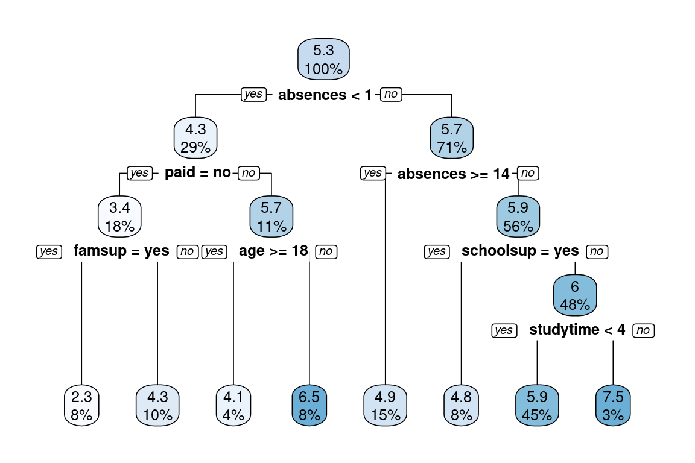
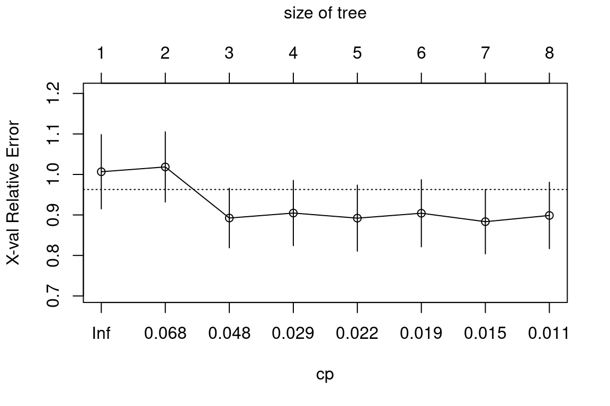
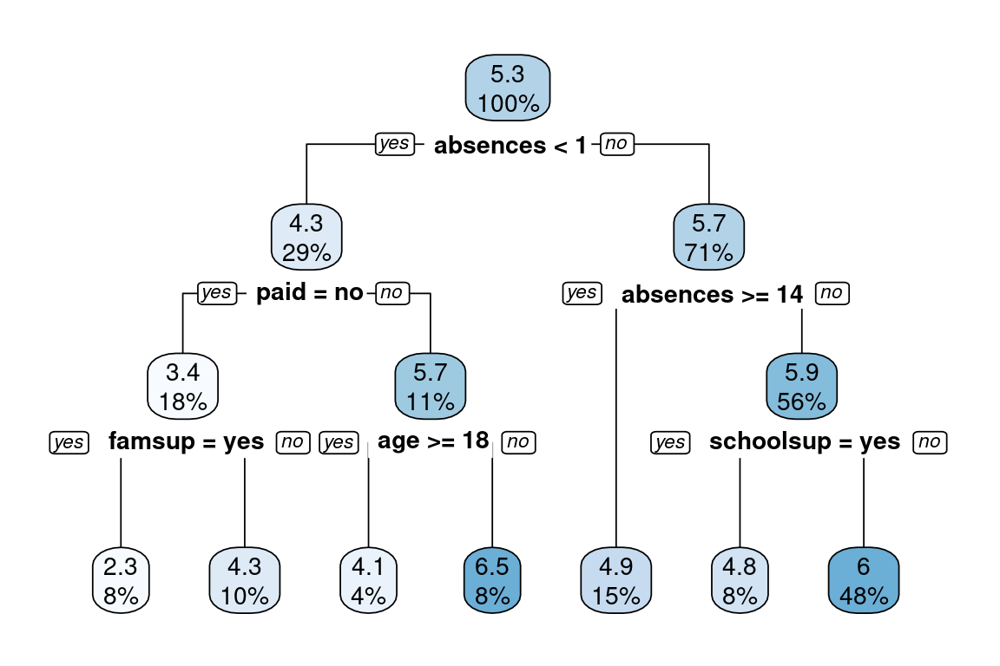

Chapter 3 Regression Trees
This chapter covers supervised machine learning with classification trees.
Introduction to regression trees
3.1 Classification vs. regression
What is the difference between classification and regression?
In classification, the response represents a category (e.g. “apples,” “oranges,” “bananas”).
In regression, the response represents a numeric value (e.g. price of a house).
All of the above.
None of the above.
3.2 Split the data
These examples will use a subset of the Student Performance Dataset from UCI ML Dataset Repository.
The goal of this exercise is to predict a student’s final Mathematics grade based on the following variables: sex, age, address, studytime (weekly study time), schoolsup (extra educational support), famsup (family educational support), paid (extra paid classes within the course subject) and absences.
The response is final_grade (numeric: from 0 to 20, output target).
After initial exploration, split the data into training, validation, and test sets. In this chapter, we will introduce the idea of a validation set, which can be used to select a “best” model from a set of competing models.
In Chapter 2, we demonstrated a simple way to split the data into two pieces using the sample() function. In this exercise, we will take a slightly different approach to splitting the data that allows us to split the data into more than two parts (here, we want three: train, validation, test). We still use the sample() function, but instead of sampling the indices themselves, we will assign each row to either the training, validation or test sets according to a probability distribution.
The dataset grade is already in your workspace.
url <- "https://assets.datacamp.com/production/repositories/710/datasets/3d720e80d1ad70a88322c2175fa0e6041761a5f9/grade.csv"
if(!file.exists("./Data/grade.csv")){ download.file(url, destfile = "./Data/grade.csv")}
grade <- read.csv("./Data/grade.csv")- Take a look at the data using the
str()function.
# Look/explore the data
str(grade)'data.frame': 395 obs. of 8 variables:
$ final_grade: num 3 3 5 7.5 5 7.5 5.5 3 9.5 7.5 ...
$ age : int 18 17 15 15 16 16 16 17 15 15 ...
$ address : Factor w/ 2 levels "R","U": 2 2 2 2 2 2 2 2 2 2 ...
$ studytime : int 2 2 2 3 2 2 2 2 2 2 ...
$ schoolsup : Factor w/ 2 levels "no","yes": 2 1 2 1 1 1 1 2 1 1 ...
$ famsup : Factor w/ 2 levels "no","yes": 1 2 1 2 2 2 1 2 2 2 ...
$ paid : Factor w/ 2 levels "no","yes": 1 1 2 2 2 2 1 1 2 2 ...
$ absences : int 6 4 10 2 4 10 0 6 0 0 ...- Set a seed (for reproducibility) and then sample
n_trainrows to define the set of training set indices. Draw a sample of sizenrow(grade)from the number 1 to 3 (with replacement). You want approximately 70% of the sample to be 1 and the remaining 30% to be equally split between 2 and 3.
# Randomly assign rows to ids (1/2/3 represents train/valid/test)
# This will generate a vector of ids of length equal to the number of rows
# The train/valid/test split will be approximately 70% / 15% / 15%
set.seed(1)
assignment <- sample(1:3, size = nrow(grade), prob = c(0.70, 0.15, 0.15), replace = TRUE)- Subset
gradeusing the sample you just drew so that indices with the value 1 are ingrade_train, indices with the value 2 are ingrade_valid, and indices with 3 are ingrade_test.
# Create a train, validation and tests from the original data frame
grade_train <- grade[assignment == 1, ] # subset the grade data frame to training indices only
grade_valid <- grade[assignment == 2, ] # subset the grade data frame to validation indices only
grade_test <- grade[assignment == 3, ] # subset the grade data frame to test indices only3.3 Train a regression tree model
In this exercise, we will use the grade_train dataset to fit a regression tree using rpart() and visualize it using rpart.plot(). A regression tree plot looks identical to a classification tree plot, with the exception that there will be numeric values in the leaf nodes instead of predicted classes.
This is very similar to what we did previously in Chapter 2. When fitting a classification tree, we use method = "class", however, when fitting a regression tree, we need to set method = "anova". By default, the rpart() function will make an intelligent guess as to what the method value should be based on the data type of your response column, but it’s recommened that you explictly set the method for reproducibility reasons (since the auto-guesser may change in the future).
The grade_train training set is loaded into the workspace.
- Using the
grade_traindataframe and the given formula, train a regresion tree.
# Train the model
grade_model <- rpart(formula = final_grade ~ .,
data = grade_train,
method = "anova")- Look at the model output by printing the model object.
# Look at the model output
print(grade_model)n= 282
node), split, n, deviance, yval
* denotes terminal node
1) root 282 1519.49700 5.271277
2) absences< 0.5 82 884.18600 4.323171
4) paid=no 50 565.50500 3.430000
8) famsup=yes 22 226.36360 2.272727 *
9) famsup=no 28 286.52680 4.339286 *
5) paid=yes 32 216.46880 5.718750
10) age>=17.5 10 82.90000 4.100000 *
11) age< 17.5 22 95.45455 6.454545 *
3) absences>=0.5 200 531.38000 5.660000
6) absences>=13.5 42 111.61900 4.904762 *
7) absences< 13.5 158 389.43670 5.860759
14) schoolsup=yes 23 50.21739 4.847826 *
15) schoolsup=no 135 311.60000 6.033333
30) studytime< 3.5 127 276.30710 5.940945 *
31) studytime>=3.5 8 17.00000 7.500000 *- Plot the decision tree using
rpart.plot().
# Plot the tree model
rpart.plot(x = grade_model, yesno = 2)
Each node shows:
- the predicted value,
- the percentage of observations in the node.
Performance metrics for regression
3.4 Evaluate a regression tree model
Predict the final grade for all students in the test set. The grade is on a 0-20 scale. Evaluate the model based on test set RMSE (Root Mean Squared Error). RMSE tells us approximately how far away our predictions are from the true values.
- First generate predictions on the
grade_testdata frame using thegrade_modelobject.
# Generate predictions on a test set
pred <- predict(object = grade_model, # model object
newdata = grade_test) # test dataset- After generating test set predictions, use the
rmse()function from theMetricspackage to compute test set RMSE.
# Compute the RMSE
rmse(actual = grade_test$final_grade,
predicted = pred)[1] 2.278249What are the hyperparameters for a decision tree?
3.5 Tuning the model
Tune (or “trim”) the model using the prune() function by finding the best “CP” value (CP stands for “Complexity Parameter”).
- Print the CP Table, a matrix of information on the optimal prunings (based on CP).
# Plot the "CP Table"
plotcp(grade_model)
# Print the "CP Table"
print(grade_model$cptable) CP nsplit rel error xerror xstd
1 0.06839852 0 1.0000000 1.0066743 0.09169976
2 0.06726713 1 0.9316015 1.0185398 0.08663026
3 0.03462630 2 0.8643344 0.8923588 0.07351895
4 0.02508343 3 0.8297080 0.9046335 0.08045100
5 0.01995676 4 0.8046246 0.8920489 0.08153881
6 0.01817661 5 0.7846679 0.9042142 0.08283114
7 0.01203879 6 0.7664912 0.8833557 0.07945742
8 0.01000000 7 0.7544525 0.8987112 0.08200148- Retrieve the optimal CP value; the value for CP which minimizes cross-validated error of the model.
# Retreive optimal cp value based on cross-validated error
(opt_index <- which.min(grade_model$cptable[, "xerror"]))7
7 (cp_opt <- grade_model$cptable[opt_index, "CP"])[1] 0.01203879- Use the
prune()function trim the tree, snipping off the least important splits, based on CP.
# Prune the model (to optimized cp value)
grade_model_opt <- prune(tree = grade_model,
cp = cp_opt)
# Plot the optimized model
rpart.plot(x = grade_model_opt, yesno = 2)
Grid search for model selection
3.6 Generate a grid of hyperparameter values
Use expand.grid() to generate a grid of maxdepth and minsplit values.
- Establish a list of possible values for
minsplitandmaxdepth.
### Establish a list of possible values for minsplit and maxdepth
minsplit <- seq(1, 4, 1)
maxdepth <- seq(1, 6, 1)- Use the
expand.grid()function to generate a data frame containing all combinations.
# Create a data frame containing all combinations
hyper_grid <- expand.grid(minsplit = minsplit, maxdepth = maxdepth)- Take a look at the resulting grid object.
# Check out the grid
head(hyper_grid) minsplit maxdepth
1 1 1
2 2 1
3 3 1
4 4 1
5 1 2
6 2 2# Print the number of grid combinations
nrow(hyper_grid)[1] 243.7 Generate a grid of models
In this exercise, we will write a simple loop to train a “grid” of models and store the models in a list called grade_models. R users who are familiar with the apply functions in R could think about how this loop could be easily converted into a function applied to a list as an extra-credit thought experiment.
- Create an empty list to store the models from the grid search.
# Number of potential models in the grid
(num_models <- nrow(hyper_grid))[1] 24# Create an empty list to store models
grade_models <- list()Write a loop that trains a model for each row in
hyper_gridand adds it to thegrade_modelslist.The loop will by indexed by the rows of
hyper_grid.For each row, there is a unique combination of the
minsplitandmaxdepthvalues that will be used to train a model.
# Write a loop over the rows of hyper_grid to train the grid of models
for (i in 1:num_models) {
# Get minsplit, maxdepth values at row i
minsplit <- hyper_grid$minsplit[i]
maxdepth <- hyper_grid$maxdepth[i]
# Train a model and store in the list
grade_models[[i]] <- rpart(formula = final_grade ~ .,
data = grade_train,
method = "anova",
minsplit = minsplit,
maxdepth = maxdepth)
}